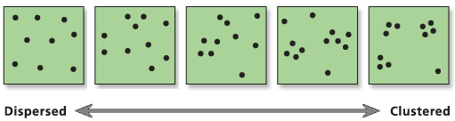

DANE PUNKTOWE
Wprowadzenie
Analiza rozkładu przestrzennego danych punktowych ma na celu określenie w jaki sposób obiekty/zdarzenia są rozmieszczone w przestrzeni.
- Czy punkty są rozmieszczone losowo? (tzn. na ich rozmieszczenie nie działa żaden czynnik lub zależą od wielu czynników które się wzajemnie znoszą)
- Czy punkty są romieszczone regularnie? (tj. efekt świafomego działania, nie jest to proces naturalny)
- Czy występują skupiska (klastry) punktów? (tzn. na rozmieszczenie punktów wpływa jakiś czynnik)

Metody: Statystyki centrograficzne
Statystyki centrograficzne stanowią przestrzenną modyfikację statystyk opisowych w klasycznej statystyce. Są podstawową formą opisu rozkładu przestrzennego danych punktowych. Do statystyk centrograficznych zalicza się:
- średnią centralną - punkt o współrzędnych stanowiących średnią arytmetyczną długości i szerokości geograficznej obiektów rozproszonych w przestrzeni
- odległość standardową - określa średnią odległość puntków od punktu centralnego (centroidu) i stanowi absolutną miarę roproszenia punktów w przestrzeni
- elipsę odchylenia standardowego - pozwala na określenia kierunków rozrzutu obiektów (obserwacji) w przestrzeni

Żródło: https://mgimond.github.io/Spatial/chp11_0.html#centrography
Metody oparte na analizie intensywności
Metody oparte na analizie intensywności analizują rozkład przestrzenny punktów pod względem badanego obszaru.
intensywność zdarzenia (event) jest stała dla całego obszaru
- średnia intensywność (\(\lambda\)) obliczana jako liczba zdarzeń \(n\) na jednostkę powierzchni \(a\) (\(\lambda = \frac{n}{a}\))
intensywność zmienia się wraz z lokalizacją
- test zliczania w kwadratach (ang. quadrat count test)
- estymacja gęstości jądra (ang. kernel density estimation)
Metody oparte na odległości
Metody oparte na odległości wykorzystują informację o odległości między każdą lokalizacją pomiaru/obserwacji, a najbliższym innym pomiarem/obserwacją.
statystyki najbliższego sąsiada - wykorzystywane do określenia rozkładu odległości pomiędzy każdą lokalizacją pomiaru/obserwacji, a najbliższym innym pomiarem/obserwacją;
funkcja G - podsumowuje rozkład odległości do najbliższego sąsiada w postaci dystrybuanty, wykorzystywana do porównania odległości teoretycznych wynikających z losowego rozkładu punktów z odległościami empirycznymi obliczonymi na podstawie danych;
funkcja K Ripley’a - wykorzystywana do porównania odległości teoretycznych wynikających z losowego rozkładu punktów z odległościami empirycznymi obliczonymi na podstawie danych;
wskaźnik Clarka-Evansa (1954) - stosunek między rzeczywistą średnią odległością od najbliższego sąsiada, a oczekiwaną dla rozkładu losowego.
Analiza danych punktowych w R
Pakiet sfdep
Pakiet sfdep pozwala na obliczanie różnych statystyk centrograficznych w oparciu o dane punktowe wczytane za pomocą pakietu sf:
center_mean()- średnia centralnastd_distance()- odległość standardowastd_dev_ellipse()- elipsa odchylenia standardowego
Pakiet spatstat
Pakiet spatstat dostarcza szeregu funkcji do analizy rozkładu danych punktowych w R. Wzór punktowy w pakiecie spatstat jest obiektem klasy ppp (plannar point pattern). Wiele funkcji z pakietu wymaga zdefiniowania także obszaru analizy (tzw. okna, window).
Pakiet spatstat zawiera funkcje pozwalające na zastosowanie:
metod opartych na analizie intensywności:
as.ppp- konwertuje dane na obiekty klasy ppp. Wymaga podania obiektu oraz określenia obszaru analizy.as.owin- tworzy okno (window) na podstawie innego obiektu (np. granic miasta Poznania)
metod opartych na odległości
pairdist()- zwraca macierz z odległościami między wszystkimi parami punktów w zbiorze danychnndist()- zwraca wektor odległości od punktu do najbliżego sąsiada; odległości te są uzyskiwane przez sortowanie odległości między parami punktów i wybierana jest minimalna wartości dla każdego punktudistmap()- oblicza odległość od każdej komórki do najbliższego punktu i zwraca mapę rastrową.clarkevans()- obliczenie wskaźnika Clarka-EvansaGest()- obliczenie funkcji GKest()- obliczenie funkcji K Ripley’aenvelope()- estowania hipotezy zerowej dla funkcji G, K Ripley’aquadratcount()- test zliczania w kwadratach